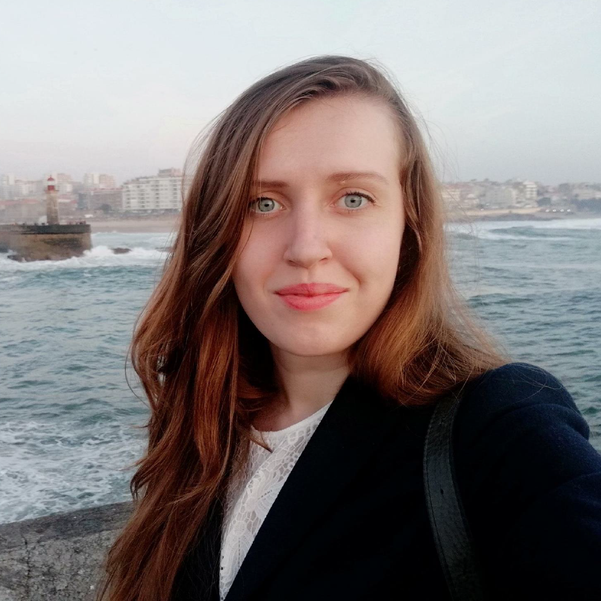

<!DOCTYPE html>
<html>
</html>
<head>
  <meta charset="utf-8">
  <meta http-equiv="X-UA-Compatible" content="IE=edge">
  <title>Iuliia Vorobiova CV&Portfolio</title>
  <meta name="description" content="">
  <meta name="viewport" content="width=device-width, initial-scale=1">
  <meta name="robots" content="all,follow">
  <!-- Bootstrap CSS-->
  <link rel="stylesheet" href="vendor/bootstrap/css/bootstrap.min.css">
  <!-- Font Awesome CSS-->
  <link rel="stylesheet" href="vendor/font-awesome/css/font-awesome.min.css">
  <!-- Google fonts - Roboto-->
  <link rel="stylesheet" href="https://fonts.googleapis.com/css?family=Roboto:400,300,700,400italic">
  <!-- owl carousel-->
  <link rel="stylesheet" href="vendor/owl.carousel/assets/owl.carousel.css">
  <link rel="stylesheet" href="vendor/owl.carousel/assets/owl.theme.default.css">
  <!-- theme stylesheet-->
  <link rel="stylesheet" href="css/style.blue.css" id="theme-stylesheet">
  <!-- Custom stylesheet - for your changes-->
 
  <link rel="stylesheet" href="css/style.css">
  <link rel="stylesheet" href="css/custom.css">
  
  <link rel="stylesheet" href="css/prettyPhoto.css">
  <!-- Favicon-->
  <link rel="shortcut icon" href="img/mask/6.jpg">
  <!-- Tweaks for older IEs--><!--[if lt IE 9]>
    <script src="https://oss.maxcdn.com/html5shiv/3.7.3/html5shiv.min.js"></script>
    <script src="https://oss.maxcdn.com/respond/1.4.2/respond.min.js"></script><![endif]-->
</head>
<body>
  <div id="all">
    <div class="container-fluid">
      <div class="row row-offcanvas row-offcanvas-left"> 
        <!--   *** SIDEBAR ***-->
        <div id="sidebar" class="col-md-4 col-lg-3 sidebar-offcanvas">
          <div class="sidebar-content">
            
            
            <div class="col-md-10  offset-md-1 d-flex justify-content-center">
                <p></p>
                
            </div>
            <h1 class="sidebar-heading" style="text-align: center;"> <a href="index.html">Iuliia Vorobiova</a></h1>
            <p class="sidebar-p"></p>
            <p class="sidebar-p">Service Design and Research, UI/UX/Web Designer, Front end developer </p>
            
            <ul class="sidebar-menu">
                <!-- Link-->
                <li class="sidebar-item"><a href="index.html" class="sidebar-link">Projects</a></li>
                <!-- Link-->
                <li class="sidebar-item"><a href="about.html" class="sidebar-link active">About</a></li>
                <!-- Link-->
                <li class="sidebar-item"><a href="contact.html" class="sidebar-link">Get in touch</a></li>
            </ul>
            <p class="social"><a href="https://www.linkedin.com/in/iuliiavorobiova/" target="_blank"  data-animate-hover="pulse" class="external gplus"><i class="fa fa-linkedin"></i></a>
              <a href="https://www.facebook.com/juliya.vorobyova" target="_blank"  data-animate-hover="pulse" class="external facebook"><i class="fa fa-facebook"></i></a>
              <a href="https://www.instagram.com/sdrethink"  target="_blank" title="" class="external instagram"><i class="fa fa-instagram"></i></a>
              <a href="mailto: iuliia.vorobiova@gmail.com" data-animate-hover="pulse" class="email"><i class="fa fa-envelope"></i></a></p>
            <div class="copyright text-center text-md-left">
              <p class="credit">&copy;2019 Portfolio & CV  </p>
            </div>
          </div>
        </div>
        <!--   *** SIDEBAR END ***  -->
        <!--   *** DETAIL ***-->
        <div class="col-md-8 col-lg-9 content-column white-background">
          <div class="small-navbar d-flex d-md-none">
            
            <button type="button" data-toggle="offcanvas" class="btn btn-outline-primary"> <i class="fa fa-align-left mr-2"></i>Menu</button>
            <h1 class="small-navbar-heading"> <a href="index.html">CV</a></h1>
          </div>
          <div class="row">
              
              <div class="col-md-12">
                  <h1>About me</h1>
                  <p class="lead">
                      I am a master degree graduating student of <strong>Politecnico di
                      Milano in Product Service System Design. </strong>
                      I have completed a comprehensive undergraduate degree in
                      Software Engineering and a postgraduate degree in Design
                      and Technology . <br>
                      I have 3 years of working experience as a Digital Production
                      Director and 2 years as a Program Manager in the field of
                      Social Innovation and Digital Products.
                  </p>
              </div>
            
              
              
            </div>


          <div class="row">
            <div class="col-xl-12">

              <div class="content-column-content">
                
                <div class="row">
                   <!-- <div class="col-lg-5">
                      <p>Received overcame oh sensible so at an. Formed do change merely to county it. <strong>Am separate contempt</strong> domestic to to oh. On relation my so addition branched. Put hearing cottage she norland letters equally prepare too. Replied exposed savings he no viewing as up. Soon body add him hill. No father living really people estate if. Mistake do produce beloved demesne if am pursuit.</p>
                      <div class="skill-item">
                        <div class="progress-title">Service Designer</div>
                        <div class="progress">
                          <div role="progressbar" aria-valuenow="60" aria-valuemin="0" aria-valuemax="100" style="width: 90%;" class="progress-bar progress-bar-skill1"><span class="sr-only">60</span></div>
                        </div>
                      </div>
                      <div class="skill-item">
                        <div class="progress-title">Stractigic Designer</div>
                        <div class="progress">
                          <div role="progressbar" aria-valuenow="70" aria-valuemin="0" aria-valuemax="100" style="width: 85%;" class="progress-bar progress-bar-skill2"><span class="sr-only">70</span></div>
                        </div>
                      </div>
                      <div class="skill-item">
                        <div class="progress-title">Front-end Developer</div>
                        <div class="progress">
                          <div role="progressbar" aria-valuenow="80" aria-valuemin="0" aria-valuemax="100" style="width: 70%;" class="progress-bar progress-bar-skill3"><span class="sr-only">80</span></div>
                        </div>
                      </div>
                      <div class="skill-item">
                        <div class="progress-title">Intercation Designer</div>
                        <div class="progress">
                          <div role="progressbar" aria-valuenow="90" aria-valuemin="0" aria-valuemax="100" style="width: 70%;" class="progress-bar progress-bar-skill4"><span class="sr-only">90</span></div>
                        </div>
                      </div>
                      <div class="skill-item">
                        <div class="progress-title">Video Maker</div>
                        <div class="progress">
                          <div role="progressbar" aria-valuenow="70" aria-valuemin="0" aria-valuemax="100" style="width: 65%;" class="progress-bar progress-bar-skill5"><span class="sr-only">70</span></div>
                        </div>
                      </div>
                    </div>
                    <div class="col-md-4">
                      <p></p>
                    </div>
                  </div>
                  
                </div>
              </div>
            </div>-->
          
       
     


<!-- Resume Section -->
<div id="resume" class="text-center">
    <div class="container">
      <div class="section-title center">
        <h2>Experience</h2>
        <hr>
      </div>
      <div class="row">
        <div class="col-lg-12">
          <ul class="timeline">

              <li class="timeline-inverted">
                  <div class="timeline-image">
                    <h4>Present<br>
                      --- <br>
                      Sept 2019</h4>
                  </div>
                  <div class="timeline-panel">
                    <div class="timeline-heading">
                      <h4>MAAM - Life Based Learning | Milan (Italy)</h4>
                      <h4 class="subheading">Product Manager & Service Designer </h4>
                    </div>
                    <div class="timeline-body">
                      <p> Responsible for Design Research and Strategic Process Planning. MAAM by Life Based Value, is the world’s first and only training program that turns parenthood into a Master’s in key skills for the business.
                         </p>
                    </div>
                  </div>
                </li>

            <li>
              <div class="timeline-image">
                <h4>July 2019<br>
                  --- <br>
                  Oct 2018</h4>
              </div>
              <div class="timeline-panel">
                <div class="timeline-heading">
                  <h4>POLI.DESIGN | MILAN (ITALY) </h4>
                  <h4 class="subheading">Service System Design <br>Internship</h4>
                </div>
                <div class="timeline-body">
                  <p>
                      Working on supply chain traceability challenge to develop a system which integrates full
                      traceability of raw materials, production processes, social and environmental requirements. </p>
                </div>
              </div>
            </li>
            <li class="timeline-inverted">
              <div class="timeline-image">
                <h4>Present<br>
                  --- <br>
                  Jan 2016</h4>
              </div>
              <div class="timeline-panel">
                <div class="timeline-heading">
                  <h4>CROWDFUNDING PLATFORM BIGGGG IDEA | KYIV (UKRAINE)</h4>
                  <h4 class="subheading">Digital Production Director </h4>
                </div>
                <div class="timeline-body">
                  <p>To determine what changes are needed in order to enforce strategies and current projects of the
                      organisation. <br>
                     To identify technical solutions or contractor for these changes, support quality control, acceptance
                      and implementation.</p>
                </div>
              </div>
            </li>
            <li>
              <div class="timeline-image">
                <h4>Jun 2016<br>
                  --- <br>
                  Nov 2015</h4>
              </div>
              <div class="timeline-panel">
                <div class="timeline-heading">
                  <h4>CANactions | KYIV (UKRAINE)</h4>
                  <h4 class="subheading">Public Program Coordinator |<br> 
                      Design Consultant </h4>
                </div>
                <div class="timeline-body">
                  <p>Responsible for the programs events from early to final stage
                    We had more than 40 best international and national experts in the fields of design, technology,
                    architecture, research and education.</p>
                </div>
              </div>
            </li>
            <li class="timeline-inverted">
                <div class="timeline-image">
                  <h4>Nov 2015<br>
                    --- <br>
                    Feb 2015 </h4>
                </div>
                <div class="timeline-panel">
                  <div class="timeline-heading">
                    <h4>Centro per lo Sviluppo Creativo Danilo Dolci | Palermo (Italy)</h4>
                    <h4 class="subheading">Designer in Visibility Department</h4>
                  </div>
                  <div class="timeline-body">
                    <p>Development of graphic and video content for web and print, project writing, organisation of public
                        events; <br>
                        Web development.</p>
                  </div>
                </div>
              </li>
              
              <li>
                  <div class="timeline-image">
                    <h4>2013<br>
                      --- <br>
                      2012</h4>
                  </div>
                  <div class="timeline-panel">
                    <div class="timeline-heading">
                      <h4>Research Centre for Environmental Studies and Sustainability | Troyes (France) </h4>
                      <h4 class="subheading">Visiting research student</h4>
                    </div>
                    <div class="timeline-body">
                      <p>
                          Researching new ways to integrate environmental considerations into design on very early stages. </p>
                    </div>
                  </div>
                </li>


          </ul>
        </div>
      </div>
    </div>
    <div class="container">
      <div class="section-title center">
        <h2>Education</h2>
        <hr>
      </div>
      <div class="row">
        <div class="col-lg-12">
          <ul class="timeline">
            
            <!-- Education Section-->
            
            <li>
              <div class="timeline-image">
                <h4>PRESENT <br>
                  --- <br>
                   2017</h4>
              </div>
              <div class="timeline-panel">
                <div class="timeline-heading">
                  <h4>Politecnico di Milano | Milan (Italy)</h4>
                  <h4 class="subheading">MSc Product Service System Design</h4>
                </div>
                <div class="timeline-body">
                  <p>Problem finding, framing, and setting; 
                      Managing a complex project through different techniques, from ethnographic research to competitive
                      analysis;
                      Designing interactions and user-experiences; 
                      Promoting participation, self-entrepreneurship, and pro-activity in society; 
                      Engaging stakeholders in articulated and multi-actor co-design processes.</p> 
                </div>
              </div>
            </li>
            <li class="timeline-inverted">
              <div class="timeline-image">
                <h4>2014 <br>
                  --- <br>
                  2012 </h4>
              </div>
              <div class="timeline-panel">
                <div class="timeline-heading">
                  <h4>Tallinn University of Technology and Estonian Academy of Arts | Tallinn (Estonia)</h4>
                  <h4 class="subheading">MSc Design and Technology Futures</h4>
                </div>
                <div class="timeline-body">
                  <p> The curriculum draws from three fields: design, technology and entrepreneurship. Is a unique creative educational experience to practice in the innovation process in collaboration with industry, community and government partners.</p>
                </div>
              </div>
            </li>
            <li>
              <div class="timeline-image">
                <h4>2011 <br>
                  --- <br>
                  2007</h4>
              </div>
              <div class="timeline-panel">
                <div class="timeline-heading">
                  <h4>Dnipro National University | Dnipro (Ukraine)</h4>
                  <h4 class="subheading">BCA Computer Science</h4>
                </div>
                <div class="timeline-body">
                  <p class="text-muted">Development of a software (C, C++ languages);
                       Planning of databases (MySQL);
                       Web technologies; 
                       Systems Programming and operational; 
                       Economics and Organization of Production; 
                       Mathematics.</p>
                </div>
              </div>
            </li>
          </ul>
        </div>
      </div>
    </div>
  </div>
</div>
</div>
</div>
</div>


              


                    


                   
  <!-- JavaScript files-->
  <script src="vendor/jquery/jquery.min.js"></script>
  <script src="vendor/popper.js/umd/popper.min.js"> </script>
  <script src="vendor/bootstrap/js/bootstrap.min.js"></script>
  <script src="vendor/jquery.cookie/jquery.cookie.js"> </script>
  <script src="vendor/owl.carousel/owl.carousel.min.js"></script>
  <script src="vendor/masonry-layout/masonry.pkgd.min.js"></script>
  <script src="js/front.js"></script>
</body>